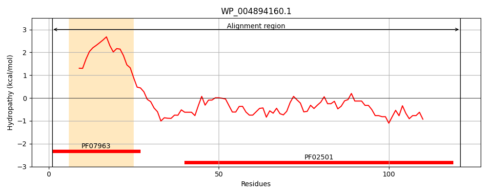
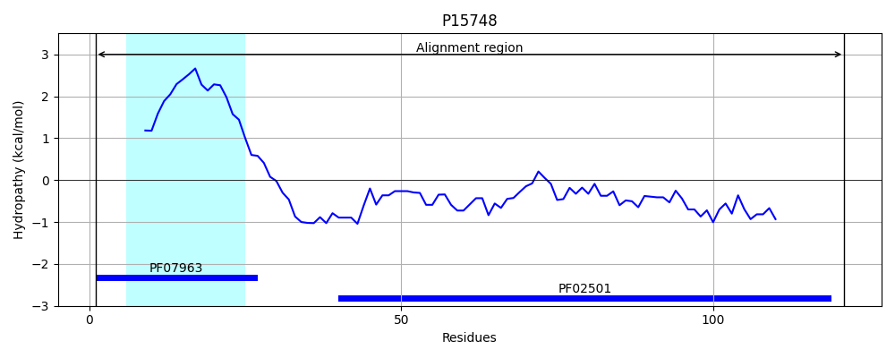
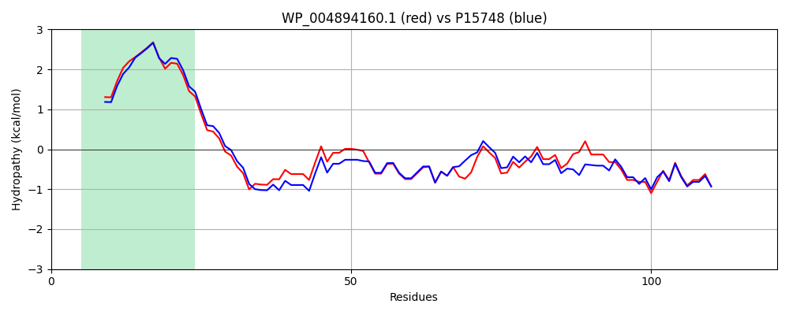

Hit Accession: P15748
Hit TCID: 3.A.15.1.1
Hit Description: gnl|BL_ORD_ID|9183 gnl|TC-DB|P15748|3.A.15.1.1 General secretion pathway protein I precursor (Pullulanase secretion protein pulI) - Klebsiella pneumoniae.
Mach Len: 121
e:0.000000
Query TMS Count : 1
Hit TMS Count: 1
TMS-Overlap Score: 1.000000
Predicted Substrates:CHEBI:36080;protein
BLAST Alignment:
| Protein Hydropathy Plots: | |
|---|---|
|  |  |
Pairwise Alignment-Hydropathy Plot: | |
|  | |